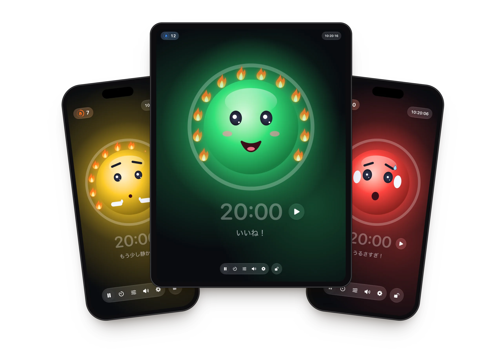
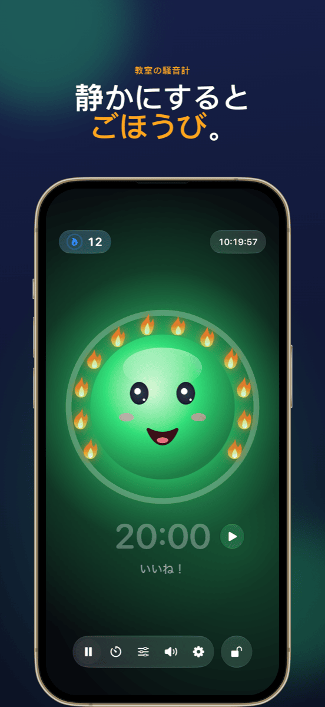
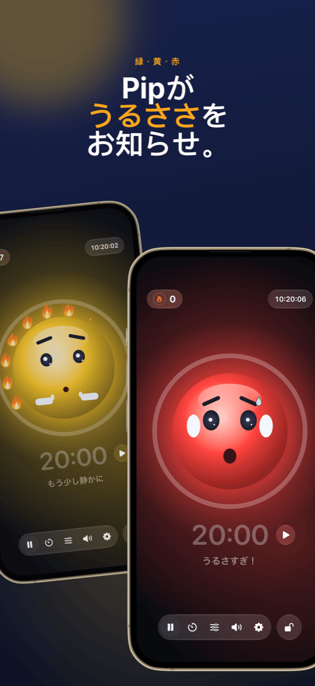
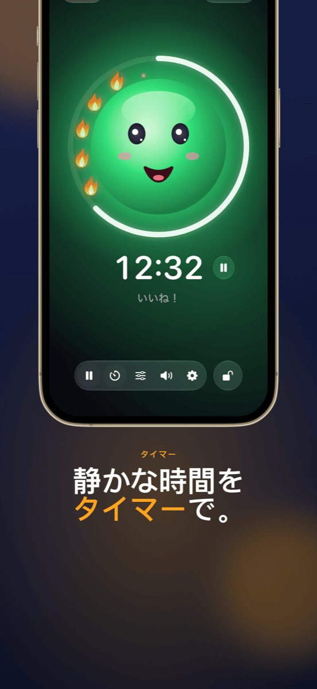
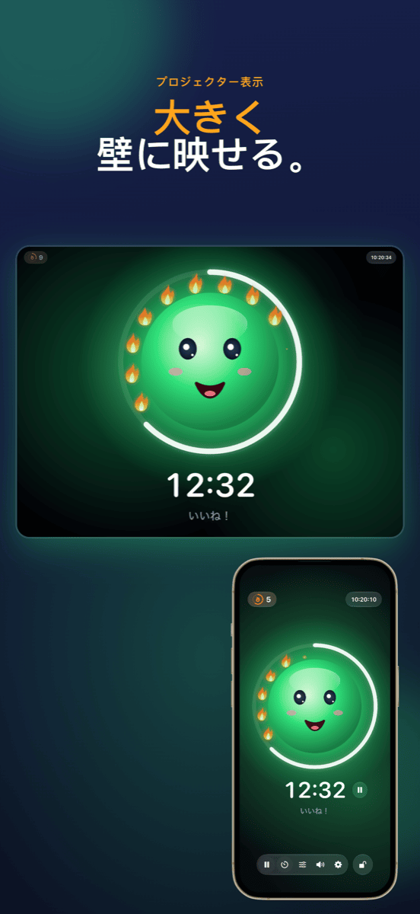
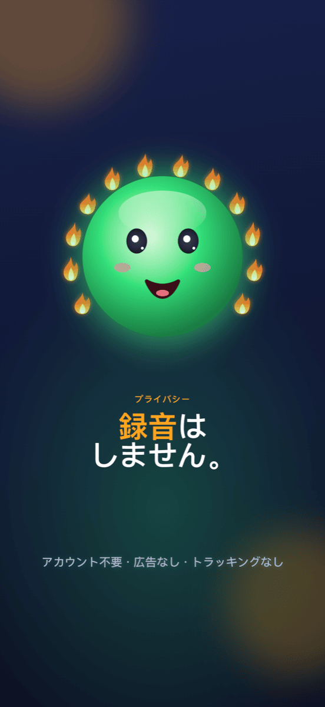

Ruhe
教室のためのやさしい騒音シグナル。静かに取り組むと炎がもらえて、うるさくても叱りません。






機能
マスコットつき騒音シグナル
緑・黄・赤。にこにこ顔が、いまの音の大きさを伝えます。黄色では小さく「しーっ」、赤では耳をふさぎます。
叱るかわりに炎を
静かなあいだ、炎がひとつずつ灯ります。12個そろうと炎の輪が完成して、お祝いです。うるさくなりすぎると炎は消えます。
タイマーがひと目で
マスコットのまわりのリングが残り時間を表示。時間のすぐ横でスタート・ストップでき、終わると計測が一時停止します。
プロジェクター表示
プロジェクターや外部ディスプレイには騒音シグナルが全画面で表示され、操作はiPadに残ります。
どのクラスにも合う
黄色と赤になるタイミングは2本のスライダーで調整。または5秒間聞き取って、Ruheが自動で調整します。
操作をロック
Face IDまたはパスコードでロックすれば、児童・生徒が設定を変えることはありません。
使い方
iPadを置く
Ruheを開いて顔をタップすると、計測が始まります。
活動してもらう
マスコットがクラスに音の大きさを見せ、静かな時間ごとに炎を集めます。
成果を見る
授業の終わりに大切なのは、うまくいったこと。炎の輪です。
ガイド
ヘルプとサポート
Ruheが何も計測しません。
Ruheにはマイクへのアクセスが必要です。「設定」→「プライバシーとセキュリティ」→「マイク」→「Ruhe」で許可してください。
赤になるのが早すぎる／遅すぎる。
ツールバーのスライダーアイコンをタップして、黄色と赤のしきい値を動かしてください。クラスがふだんどおり活動しているときに「自動設定」を使う方法もあります。
プロジェクターに映すには？
iPadをケーブルまたはAirPlayでプロジェクターにつなぎます。Ruheが自動で騒音シグナルを全画面表示し、操作はiPadに残ります。
炎をリセットするには？
左上の炎カウンターをタップします。炎の数を直したり、すべて0に戻したりできます。Ruheが10分以上バックグラウンドにあった場合、次の授業はいずれにしても0から始まります。
何か録音されますか？
いいえ。Ruheが計測するのは音量だけで、録音・保存・送信は一切しません。詳しくはプライバシーポリシーをご覧ください。
ほかに質問がありますか？
info@crabucate.de までご連絡ください。通常1〜2日以内にお返事します。
心地よい静けさを。
iPad・iPhone対応 – App Storeで配信中。